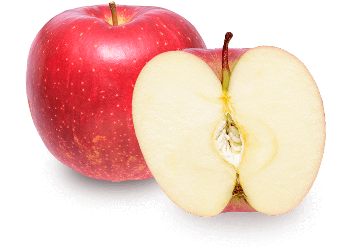

資料->資訊->知識->智慧
「資料」(Data)是用來表示某項事實的符號或語言,通常是指收集得到 而且未經過整理、原始形式的文字、符號、圖形、影像或聲音等。
「資訊」(Information)是指將資料經過整理和分析後,轉化爲有用的資訊。 因此,資料是資訊的原始型態,必須將它轉化後才能成爲有用的訊息, 這些轉化的過程可能包括收集、分類、篩選、重組、排序、計算、合併和彙 總等運算而成。 在企業組織當中,我們經常會爲了某個特定的問題而作出決 策,於是便將某些相關的資料收集整理後加以處理,便能得到我們所要的資訊。
| 111 | 222 | 333 |
| 444 | 555 | 666 |
| 777 | 888 | 999 |